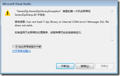

使用SevenZipSharp出现“Can not load 7-zip library or internal COM error! Message: DLL file does not exist.”的解决方案
如果你是从nuget上下载安装的SevenZipSharp库，当你写好相应代码，兴冲冲的启动程序进行测试时，以下画面会让你受到当头一棒： 
究其原因，是因为SevenZipSharp只是native 7z库的C# Wrap，所以你要让程序能够正常运行，还需要有7z的运行时库(但诡异的是SevenZipSharp既没有自己附带，也没有写入依赖项)。
可以打开nuget，下载安装7z或7z.Libs，设置7z.dll为始终拷贝。然后再次启动程序。
如果依然出现这个错误，说明SevenZipSharp没有能够自动找到7z.dll，这时我们可以手动设置其路径，如：
if (IntPtr.Size == 4)
{
SevenZipCompressor.SetLibraryPath(@"7z-x86.dll");
}
else
{
SevenZipCompressor.SetLibraryPath(@"7z-x64.dll");
}
解压的设置同理。
最后修改于 2016-08-31